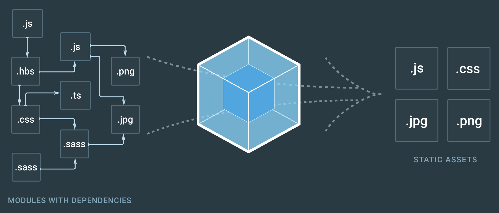
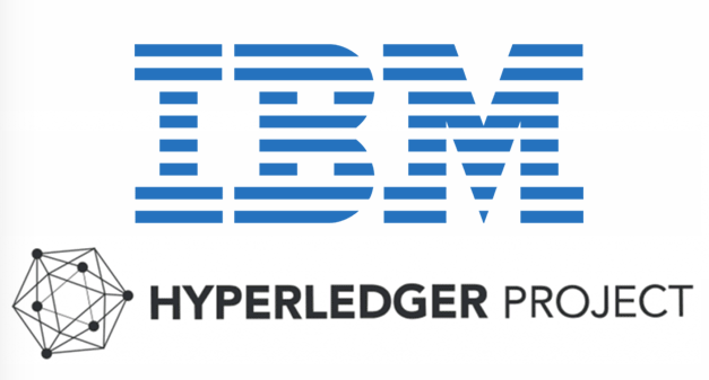

What's the Goal?
1) Blockchain is poised to radically transform our world and disrupt many industries by making organizations that use it more transparent, democratic, decentralized, efficient, and secure, and people need to know that this is the future.
2) IBM is investing heavily in Blockchain and doing well. This is an emerging technology and one way to gain more ground is to provide use cases and tutorials for various markets.
3) Providing a central platform of information and tools can be helpful to fulfill these goals.
Tools Used



